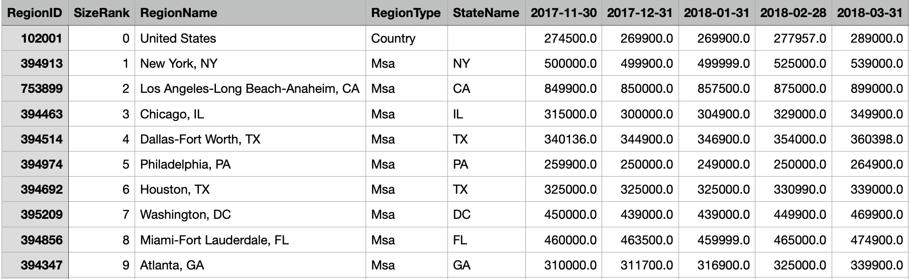

Demography Dataset
Demography Datasets are retrieved using U.S. Census API.
- Type: json data, category and numeric
- Source: United States Census Bureau
For available API: https://www.census.gov/data/developers/data-sets.html
Dataset: Economic Indicators (Time Series: various years - present): https://www.census.gov/data/developers/data-sets/economic-indicators.html
Register: https://api.census.gov/data/key_signup.html - Collecting method: API (R Code)
- Dataset
| Name | Description | Data Preview | Get data |
|---|---|---|---|
| Housing Vacancies and Homeownership | Reported by Quarters, json file | Download | |
| New Homes Sales | Reported by month, json file | Download |
Zillow Research Dataset
- Type: record labeled data, numeric
- Collecting method: Directly download
Source: Zillow Research at https://www.zillow.com/research/data/ - Dataset
| Name | Description | Dataset preview | Get data |
|---|---|---|---|
| Metro Area Zillow Observed Rent Index (ZORI) | A smoothed measure of the typical observed market rate rent across a given region. | Download | |
| For-sale Inventory (raw, SFR, monthly) | The count of single family homes (SFR) that were active at any time in a given month. |  |
Download |
| For-sale Inventory (raw, all homes, monthly) | The count of all homes that were active at any time in a given month. |  |
Download |
| Median List Price (raw, SFR, monthly) | The median price at SFR across various geographies were listed. |  | Download |
| Median List Price (raw, all homes, monthly) | The median price at all homes across various geographies were listed. | Download | |
| Median Sales Price (raw, SFR, monthly) | The median price at SFR across various geographies were sold. | Download | |
| Median Sales Price (raw, all homes, monthly) | The median price at all homes across various geographies were sold. | Download |
Maps
- Type: Maps (shapefile)
- Collecting method: Directly download
Source: United States Census Bureau at https://www.census.gov/geographies/mapping-files/time-series/geo/carto-boundary-file.html - Dataset
| Name | Description | Dataset preview | Get data |
|---|---|---|---|
| United States Region and State map | shape file including information of U.S. states and corresponding Regions. | Download |
Tweets
- Type: text data (TXT)
- Source: Twitter API
For API document: https://developer.twitter.com/en/docs/twitter-api - Collecting method: API (R Code 1 and R Code 2)
- Dataset
| Name | Description | Dataset preview | Get data |
|---|---|---|---|
| Homebuying tweets | Tweets data from January 1st, 2020 to September 25th, 2021 with hashtag #homebuying | Download |
News
News abstract
- Type: text data (JSON)
- Source: News API https://newsapi.org/
- Collecting method: API (Python Code)
- Dataset
Full news
| Name | Description | Dataset preview | Get data |
|---|---|---|---|
| Homebuying articles | News articles from August 5th, 2021 to September 25th, 2021 with keywords of "home buying" OR "buying a home" OR "housing market". | Download | |
| Mortgage articles | News articles from August 5th, 2021 to September 25th, 2021 with keywords of "mortgage rate". |  |
Download |
| Real estate articles | News articles from August 5th, 2021 to September 25th, 2021 with keywords of "real estate market". |  |
Download |
Based on the news title obtained from NewsAPI as above, the full content news are downloaded online from individual news sources. Original data can be downloaded here.